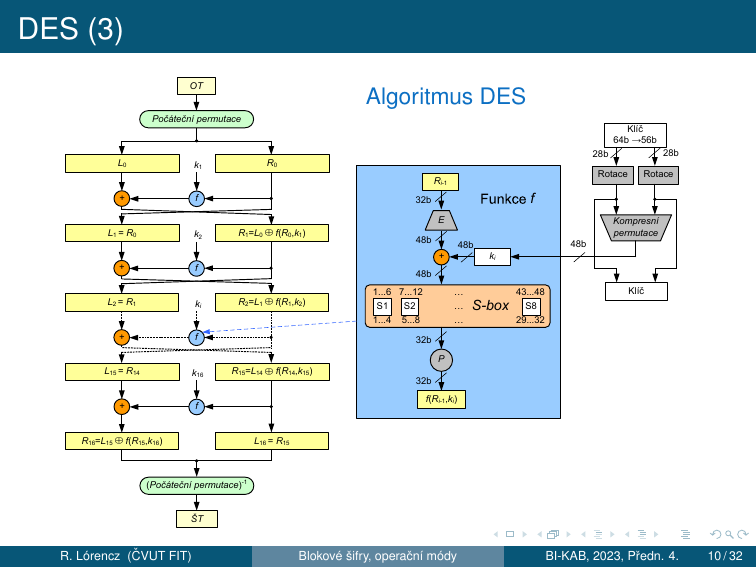
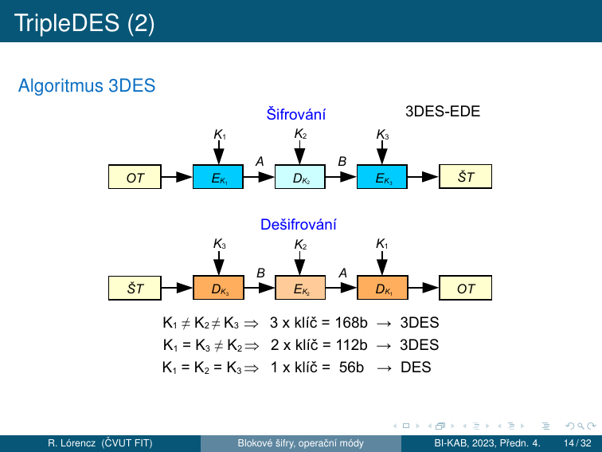
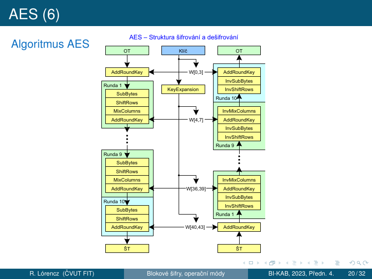
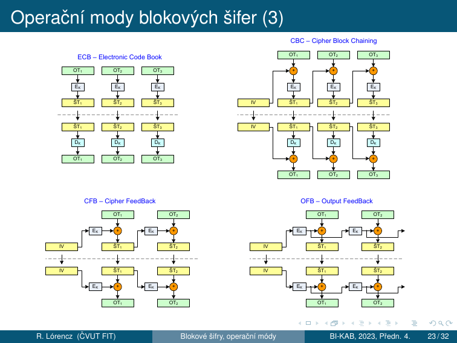
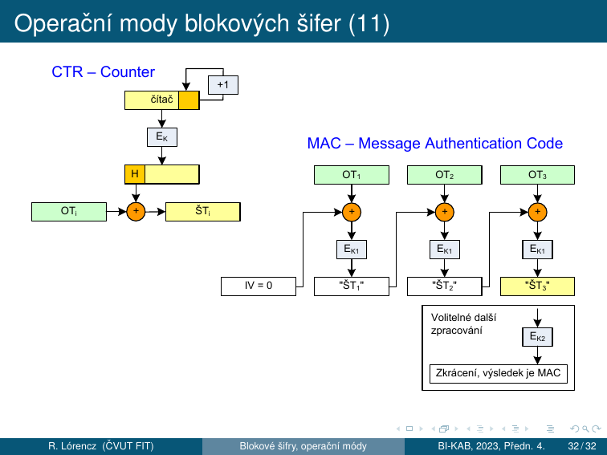

3. Blokové šifry¶
Cíle kapitoly
- Pochopit formální definici blokové šifry a Feistelovu síť
- Znát DES — F funkci, S-boxy, generování podklíčů, slabiny
- Porozumět AES — 4 operace, GF(2⁸), proč není Feistelova
- Umět popsat všechny provozní módy (ECB, CBC, CFB, OFB, CTR, CBC-MAC)
3.1 Bloková šifra — definice¶
Nechť \(A\) je abeceda \(q\) symbolů, \(t \in \mathbb{N}\) a \(M = C\) je množina všech řetězců délky \(t\) nad \(A\). Nechť \(K\) je množina klíčů. Bloková šifra je šifrovací systém \((M, C, K, E, D)\), kde \(E\) a \(D\) jsou zobrazení, definující pro každé \(k \in K\) transformace šifrování \(E_k\) a dešifrování \(D_k\) tak, že šifrování bloků OT \(m_1, m_2, m_3, \ldots\), kde \(m_i \in M\), probíhá podle vztahu \(c_i = E_k(m_i)\) a dešifrování podle vztahu \(m_i = D_k(c_i)\) pro každé \(i \in \mathbb{N}\).
Pro blokovou šifru je podstatné, že všechny bloky OT jsou šifrovány toutéž transformací a všechny bloky ŠT jsou dešifrovány toutéž transformací. Za určitých okolností můžeme za blokové šifry považovat šifry substituční a transpoziční.
- Dnes nejběžnější šifry používají blok 128 bitů (na přelomu letopočtu se přešlo ze 64 bitů)
- Historicky nejznámější 64b šifry: DES, TripleDES, IDEA, CAST
- Moderní blokové šifry využívají principy algoritmů Feistelova typu — umožňující postupnou aplikací relativně jednoduchých transformací vytvořit složitý kryptografický algoritmus
3.2 Feistelova s흶
Princip¶
Feistelova síť dělí blok \(2n\) bitů na levou a pravou polovinu a střídavě je míchá pomocí libovolné funkce \(F\):
Klíčová vlastnost: Symetrie
Dešifrování = šifrování s obráceným pořadím podklíčů \(K_r, K_{r-1}, \ldots, K_1\).
Funkce \(F\) nemusí být invertibilní — to je elegance Feistelovy sítě. Ze všech možných funkcí \(f : V_4 \to V_4\) je \((2^4)^{2^4} = 16^{16} \doteq 1{,}85 \cdot 10^{19}\) — invertibilita není požadavek.
Jednoduchý příklad (ne obecný princip)¶
Mějme 2 permutace na 4bitech a 8bitový blok \(m = (m_0\, m_1)\):
Šifrování: \(c_1 = (m_1\, m_2)\), kde \(m_2 = m_0 \oplus f_1(m_1)\), pak \(c_2 = (m_2\, m_3)\), kde \(m_3 = m_1 \oplus f_2(m_2)\).
Pro \(m = 1001\,1101\): \(c_1 = (1101\,1110)\), \(c_2 = (1110\,0000)\).
Dešifrování: \(m_1 = m_3 \oplus f_2(m_2)\) a \(m_0 = m_2 \oplus f_1(m_1)\), přičemž dešifrovaná hodnota je \(m = 1001\,1101\). Z předcházejících příkladů je zřejmé, že funkce \(f_1\) a \(f_2\) nemusí být prosté.
3.3 DES — Data Encryption Standard¶
Historie a kontext¶
- Veřejná soutěž (1977): šifrovací standard (FIPS 46-3) v USA pro ochranu citlivých ale neutajovaných dat ve státní správě — součást průmyslových, internetových a bankovních standardů
- Klíč 56b: původní návrh IBM byl 64b, ale byl do původního návrhu IBM zanesen vliv americké tajné služby NSA
- DES — intenzivní výzkum a útoky ⇒ objeveny teoretické negativní vlastnosti: tzv. slabé a poloslabé klíče, komplementárnost a teoreticky úspěšná lineární a diferenciální kryptoanalýza
- V praxi jedinou zásadní nevýhodou je pouze krátký klíč
- 1998: stroj DES-Cracker, luštící DES hrubou silou
- DES jako americký standard skončil (jen v „dobíhajících" systémech a kvůli kompatibilitě) a místo něj: Triple-DES (FIPS 46-3)
- Od 26. 5. 2002 — šifrovací standard nové generace AES
Parametry¶
| Parametr | Hodnota |
|---|---|
| Délka bloku | 64 bitů |
| Délka klíče | 56 bitů (+ 8 paritních = 64 bitů celkem, každý 8. bit je bit parity) |
| Počet kol | 16 (Feistel) |
| Status | ❌ ZASTARALÝ |
Stavební části DES¶
DES je iterovaná šifra typu \(E_{k_{16}}(E_{k_{15}}(\ldots(E_{k_1}(m_i)\ldots)))\).
- Místo počátečního zašumění OT se používá bezklíčová pevná permutace Počáteční permutace a místo závěrečného zašumění ŠT permutace k ní inverzní (Počáteční permutace)⁻¹
- Po počáteční permutaci je blok rozdělen na dvě 32b poloviny \((L_0, R_0)\)
- Každá ze 16 rund \(i = 1, 2, \ldots, 16\) transformuje \((L_i, R_i)\) na novou hodnotu \((L_{i+1}, R_{i+1}) = (R_i,\, L_i \oplus f(R_i, k_{i+1}))\)
- Po 16. rundě dochází ještě k výměně pravé a levé strany: \((L_{16}, R_{16}) = (R_{15},\, L_{15} \oplus f(R_{15}, k_{16}))\) a závěrečné permutaci (Počáteční permutace)⁻¹
- Dešifrování probíhá stejným způsobem jako šifrování, pouze se obrátí pořadí výběru rundovních klíčů
- 56b klíč \(k\) je v inicializační fázi nebo za chodu algoritmu expandován na 16 rundovních klíčů \(k_1\) až \(k_{16}\), které jsou řetězci 48 bitů, každý z těchto bitů je některým bitem původního klíče \(k\)
Algoritmus DES¶

Rundovní funkce \(f\)¶
Rundovní funkce se skládá z binárního načtení klíče \(k_i\) na vstup. 48b klíč \(k_i\) je vytvořen po kompresi ze 2 28b rotovaných částí původního klíče \(k\), kde počet bitů rotace je závislý na čísle rundy.
- Expanze E (32b → 48b): Tento klíč \(k_i\) je dál xorován s expandovanou 32b částí \(R_{i-1}\), která je expanzně permutována v bloku \(E\) z 32 na 48b. Tato operace kromě rozšíření daného 32b slova také permutuje bity tohoto slova tak, aby se dosáhlo lavinového efektu. Žádný vstupní bit se nepoužije \(2\times\).
- S-boxy (48b → 32b): Následně je prováděna pevná nelineární substituce na úrovni 6b znaků do 4b znaků s následnou transpozicí na úrovni bitů. Těmito operacemi se dosahuje dobré difúze i konfúze. Použité substituce se nazývají substituční boxy: S-boxy, jsou jediným nelineárním prvkem schématu. Pokud bychom substituci vynechali, mohli bychom vztahy mezi ŠT, OT a klíčem popsat pomocí operace binárního sčítání \(\oplus\), tedy lineárními vztahy — tato nelinearita je překážkou jednoduchého řešení rovnic vyjadřujících vztah mezi OT, ŠT a K.
- P-permutace (32b → 32b): Následně je 32b výsledné slovo z S-boxu permutováno v bloku \(P\). Tato permutace převádí každý vstupní bit do výstupu, kde žádný vstupní bit se nepoužije \(2\times\).
- Nakonec se výsledek permutace sečte modulo 2 s levou 32b polovinou a začne další runda.
S-boxy — klíčový zdroj nelinearity¶
Každý S-box je 4×16 lookup tabulka. Vstup: 6 bitů, výstup: 4 bity.
- Vnější 2 bity (\(b_1 b_6\)) → číslo řádku (0–3)
- Vnitřní 4 bity (\(b_2 b_3 b_4 b_5\)) → číslo sloupce (0–15)
Generování podklíčů¶
- 56b klíč expandován pomocí PC-1 (vyhozeny 8 paritních bitů) na \(C_0\) (28b) a \(D_0\) (28b)
- V každém kole cyklický posun vlevo: kola 1, 2, 9, 16 → posun 1 bit; ostatní kola → posun 2 bity
- Z \(C_i \| D_i\) se pomocí PC-2 (kompresní permutace 56b → 48b) vybere podklíč \(k_i\)
3.4 3DES — Triple DES¶
TripleDES (3DES) prodlužuje klíč originální DES tím, že používá DES jako stavební prvek celkem \(3\times\) s 2 nebo 3 různými klíči. Nejčastěji se používá varianta EDE (Encrypt-Decrypt-Encrypt), definovaná ve standardu FIPS PUB 46-3 (v bankovní normě X9.52).

| Konfigurace klíčů | Efektivní délka klíče |
|---|---|
| \(K_1 \neq K_2 \neq K_3\) | 168 bitů (3DES) |
| \(K_1 = K_3 \neq K_2\) | 112 bitů (3DES) |
| \(K_1 = K_2 = K_3\) | 56 bitů (= DES, zpětná kompatibilita) |
- 3DES je spolehlivá šifra — klíč je dostatečně dlouhý a teoretickým slabinám (komplementárnost, slabé klíče) se dá předcházet
- 3DES lze, jako jakoukoliv jinou blokovou šifru, použít v různých operačních modech (CBC → 3DES-EDE-CBC)
3DES zastaralý
NIST deprecated 3DES v roce 2017 a disallowed od 2024. Migrujte na AES-128 nebo AES-256.
3.5 AES / Rijndael¶
Historie¶
- Po útocích hrubou silou na DES americký standardizační úřad připravil náhradu — Advanced Encryption Standard (AES)
- 2. 1. 1997 — výběrové řízení na AES, 15 kandidátů
- Z 5 finalistů byl vybrán algoritmus Rijndael [rájndol] (autoři J. Daemen a V. Rijmen)
- Jako AES byl přijat s účinností od 26. května 2002 — FIPS PUB 197
Parametry¶
| Délka klíče \(N_k\) (slov) | Počet kol \(N_r\) | Velikost stavu |
|---|---|---|
| 128 bitů (\(N_k = 4\)) | 10 | 4×4 byty |
| 192 bitů (\(N_k = 6\)) | 12 | 4×4 byty |
| 256 bitů (\(N_k = 8\)) | 14 | 4×4 byty |
\(N_r = N_k + 6\) — počet rund se mění podle délky klíče.
AES není Feistelovského typu!
AES je SP-síť (Substitution-Permutation network). Větší délka bloku a klíče zabraňují útokům aplikovaným na DES. AES nemá slabé klíče, je odolný proti známým útokům a metodám lineární a diferenciální kryptoanalýzy.
GF(2⁸) — Galoisovo těleso¶
AES pracuje s prvky Galoisova tělesa \(GF(2^8)\) a s polynomy, jejichž koeficienty jsou prvky z \(GF(2^8)\). Bajt s bity \((b_7, \ldots, b_0)\) je zde chápán jako polynom \(b_7 x^7 + \cdots + b_1 x^1 + b_0\) a operace „násobení těchto polynomů modulo \(m(x)\)" odpovídá násobení těchto polynomů modulo:
Konstantní prvky matice MixColumns jsou vyjádřeny hexadecimálně.
Průběh šifrování¶
AES využívá \(1 + N_r\) rundovních 128b klíčů, které se definovaným způsobem odvozují ze šifrovacího klíče.
- Před zahájením 1. rundy šifrování se provede úvodní zašumění: xoruje se první rundovní klíč (128b na 128b)
- \(N_r\) shodných rund (s výjimkou poslední, kde se neprovede operace MixColumns), při kterých výstup z každé předchozí rundy slouží jako vstup do rundy následující — dochází k postupnému mnohonásobnému zesložiťování výstupu
- Na počátku každé rundy se vstup (16 B) naplní postupně shora dolů a zleva doprava do matice 4×4 B: \(\mathbf{A} = (a_{ij})\), \(i, j = 0, 1, 2, 3\)
4 operace každého kola¶
Na každý bajt matice \(\mathbf{A}\) se zvlášť aplikuje substituce daná pevnou substituční tabulkou SubBytes. Zajišťuje konfúzi — nelineárnost AES. V roce 2002 bylo zjištěno, že vzájemné vztahy výstupních \((y1,\ldots,y8)\) a vstupních \((x1,\ldots,x8)\) bitů lze popsat implicitními rovnicemi \((x1,\ldots,x8,y1,\ldots,y8) = 0\) pouze druhého řádu.
Řádky matice \(\mathbf{A}\) se cyklicky posunou postupně o 0–3 bajty doleva: 1. řádek o 0, druhý o 1, třetí o 2 a čtvrtý o 3 — dochází k transpozici na úrovni bajtů. Zajišťuje difúzi mezi sloupci.
Na každý jednotlivý sloupec matice \(\mathbf{A}\) se aplikuje operace MixColumns, která je substitucí 32 bitů na 32 bitů. Lze ji popsat lineárními vztahy — všechny výstupní bity jsou nějakou lineární kombinací vstupních bitů:
Násobení je násobením prvků \(GF(2^8)\). Konstantní prvky jsou vyjádřeny hexadecimálně. Zajišťuje difúzi v rámci sloupce. Vynechána v posledním kole.
Jako poslední operace rundy se vykoná transformace AddRoundKey, v rámci níž se na jednotlivé sloupce matice \(\mathbf{A}\) zleva doprava xoruje odpovídající rundovní klíč (\(4 \times 32\) bitů). Tím je jedna runda popsána a začíná další. Po poslední rundě se ŠT jen vyčte z matice \(\mathbf{A}\).
Jediné místo, kde vstupuje klíč.
Struktura AES¶

Při odšifrování se používají operace inverzní k operacím použitým při zašifrování, neboť všechny jsou reverzibilní.
AES Key Schedule¶
Z \(N_k\) slov klíče se expanduje na \((N_r + 1) \times 4\) slov podklíčů pomocí:
- SubWord — SubBytes na slově (4 bajty)
- RotWord — cyklická rotace slova o 1 bajt
- XOR s Rcon — round constant (odvozena z \(GF(2^8)\))
3.6 Provozní módy blokových šifer¶
Operační mody blokových šifer jsou způsoby použití blokových šifer v daném kryptosystému, kde OT není jen 1 blok blokové šifry, ale obecně posloupnost znaků dané abecedy. U moderních blokových šifer chápeme jako znaky bajty (i když se délka bloku \(N\) uvádí v bitech; obvykle \(N = 64\) nebo 128). Pomocí operačních módů lze získat nové zajímavé vlastnosti a využití blokových šifer. Módy: ECB, CFB, OFB, CBC, CTR a CBC-MAC.
Synchronní proudové šifry mají nedostatečnou vlastnost difúze neboť pracují jen nad jednotlivými znaky abecedy. Moderní blokové šifry naproti tomu dosahují velmi dobrých vlastností jak difúze, tak konfúze.

ECB — Electronic Codebook¶
Dešifrování: \(OT_i = D_K(\text{ŠT}_i)\)
ECB — NIKDY NEPOUŽÍVAT
- Stejné bloky OT mají vždy stejný šifrový obraz → vzory OT jsou viditelné v ŠT
- Integrita: útočník může bloky ŠT vyměňovat, vkládat nebo vyjímat a tak snadno docílit pro uživatele nežádoucích změn v OT, zejména pokud dvojici (OT, ŠT) už zná
- Šifrování nezajistí integritu OT
CBC — Cipher Block Chaining¶
Dešifrování: \(\text{ŠT}_0 = IV,\quad OT_i = \text{ŠT}_{i-1} \oplus D_K(\text{ŠT}_i),\quad i = 1, 2, \ldots, n\)
- Difúze: každý běžný šifrový blok závisí na celém předchozím OT z důvodu řetězení závislosti přes předchozí ŠT
- CBC je nejpoužívanějším operačním modem blokových šifer — eliminuje slabiny ECB
- Náhodný IV způsobí, že budeme-li šifrovat jeden a tentýž OT \(2\times\), obdržíme naprosto odlišný ŠT
- Řetězení mírně znesnadňuje útoky v porovnání s ECB
- Samosynchronizace: z definice modu CBC vyplývá vlastnost samosynchronizace — dešifrování je schopno se zotavit a produkovat správný OT již při 2 za sebou jdoucích správných blocích ŠT (\(\text{ŠT}_{i-1}\) a \(\text{ŠT}_i\))
- Šifrování sekvenční, dešifrování paralelní
CFB — Cipher Feedback¶
CFB je kombinací vlastností CBC a proudové šifry — převádí blokovou šifru na proudovou.
Dešifrování: \(\text{ŠT}_0 = IV,\quad OT_i = \text{ŠT}_i \oplus E_K(\text{ŠT}_{i-1}),\quad i = 1, 2, \ldots, n\)
- Inicializační hodnota IV nastavuje konečný automat do náhodné polohy
- Automat produkuje posloupnost hesla, které se jako u proudových šifer xoruje na OT
- Jako výstup lze použít část bloku hesla/ŠT, např. \(b\) bitů ⇒ se \(b\) bity hesla (CFB) nebo \(b\) bity vzniklého ŠT (CFB) vede zprava do vstupního registru (původní obsah registru se posune doleva o \(b\) bitů — \(b\) bitů nejvíce vlevo z registru vypadne)
- Samosynchronní: je-li \(b\) bitů, pak postačí 2 nenarušené \(b\)-bitové bloky ŠT, aby se OT zesynchronizoval
- V modech OFB a CFB se bloková šifra používá jen jednosměrně — jen transformace \(E_K\) ⇒ výhodné při HW realizaci
OFB — Output Feedback¶
OFB převádí blokovou šifru na synchronní proudovou šifru — heslo je generováno konečným automatem zcela autonomně bez vlivu OT a ŠT.
Dešifrování: \(\text{ŠT}_0 = IV,\; H = E_K(IV),\; \{OT_i = \text{ŠT}_i \oplus H,\; H = E_K(H)\},\quad i = 1, 2, \ldots, n\)
- Heslo generuje konečný automat, který má maximálně \(2^N\) vnitřních stavů
- Se produkce hesla musí opakovat — délka periody hesla je proto maximálně \(2^N\), její konkrétní délka je určena hodnotou IV a může se pohybovat náhodně v rozmezí 1 do \(2^N\)
- Struktura hesla je značně závislá na tom, zda zpětná vazba je plná nebo nikoli — pro \(b < N\) je střední hodnota délky periody pouze cca \(2^{N/2}\), zatímco pro \(b = N\) je to \(2^{N-1}\)
- Pouze transformace \(E_K\) — výhodné při HW realizaci
CTR — Counter Mode¶
Podobný OFB, převádí blokovou šifru na synchronní proudovou šifru — není problém s neznámou délkou periody hesla (je dána předem periodou čítače).
Dešifrování: \(CTR_i = |IV + i - 1|_{2^B},\quad H_i = E_K(CTR_i),\quad OT_i = \text{ŠT}_i \oplus H_i,\quad i = 1, 2, \ldots, n\)
IV se načte do vstupního registru (čítače) \(T\). Po jeho zašifrování vzniká první blok hesla. Poté dojde k aktualizaci čítače \(T\), nejčastěji přičtením jedničky.
- Šifrování i dešifrování paralelní ✅
- Nevyžaduje inverzi \(E_K^{-1}\) ✅
- Heslo může být vypočítáno jen na základě pozice OT a IV, nezávisle na ničem jiném
- V žádných zprávách šifrovaných tímtéž klíčem nesmí dojít k vygenerování stejného bloku hesla vícekrát ⇒ obsah čítače nesmí být stejný → dvojí použití hesla → rozluštění OT
Metoda solení IV¶
U operačních módů CBC, OFB, CFB i CTR je možné využívat metodu solení IV:
- Komunikujícímu protějšku se předává hodnota IV, ale k šifrování se použije jiná hodnota IV' ("osolený IV")
- Tato hodnota se na obou stranách vypočítá z IV a klíče \(K\) nějakým definovaným způsobem — např. to může být hašovací hodnota vypočítaná ze zřetězení obou hodnot
- Bezpečnostní výhodou je, že skutečně použitá inicializační hodnota IV' se neobjevuje nikde na komunikačním kanálu
CBC-MAC — Message Authentication Code¶
Proudové a blokové šifry zajišťují důvěrnost, ne integritu zpráv. Mody CBC a CFB sice způsobí mírnou propagaci chyby (chyba v jednom bloku ŠT naruší 2 bloky OT), ale v systémech, kde není ve vlastním OT zajištěna nějaká redundance, mohou být zpracována chybná data.
Autentizační kód zprávy (CBC-MAC) řeší právě zajištění neporušenosti dat:
- Tento zabezpečovací kód autentizuje původ zprávy a řeší obranu proti náhodným i úmyslným změnám nebo chybám na komunikačním kanálu
- CBC-MAC je krátký kód, který vznikne zpracováním zprávy s tajným klíčem \(K_1\) — klíč je jiný než k šifrování zprávy
- Výpočet CBC-MAC probíhá tak, že se zpráva jakoby šifruje v modu CBC s nulovým IV, ale průběžný ŠT se nikam neodesílá
- CBC-MAC je pak tvořen až posledním blokem \(\text{ŠT}_n\), přičemž je možné ještě jedno přídavné šifrování navíc: \(CBC\text{-}MAC = E_{K_2}(\text{ŠT}_n)\)
- Z výsledného bloku se někdy bere jen určitá část (polovina bloku) o délce potřebné k vytvoření odolného zabezpečovacího kódu
Autentizace, ne nepopiratelnost
CBC-MAC zajišťuje službu autentizace původu dat. Protože je to symetrická technika, nezaručuje nepopiratelnost.

Srovnání módů¶
| Mód | Randomizace | Paral. E | Paral. D | Integrita | Samosync. | Použití |
|---|---|---|---|---|---|---|
| ECB | ❌ | ✅ | ✅ | ❌ | ❌ | Nikdy! |
| CBC | ✅ (IV) | ❌ | ✅ | ❌ | ✅ (2 bloky) | Disk (hist.) |
| CFB | ✅ (IV) | ❌ | ✅ | ❌ | ✅ | HW proudová |
| OFB | ✅ (IV) | ❌ | ❌ | ❌ | ❌ | Kanály se šumem |
| CTR | ✅ (nonce) | ✅ | ✅ | ❌ | ❌ | Streaming |
| CBC-MAC | — | ❌ | — | ✅ | — | Integrita zpráv |
Shrnutí kapitoly¶
Rychlý přehled
| Algoritmus | Typ | Klíč | Blok | Kola | Status |
|---|---|---|---|---|---|
| DES | Feistel | 56b | 64b | 16 | ❌ |
| 3DES (EDE) | 3×DES | 112/168b | 64b | 48 | ⚠️ Deprecated |
| AES-128 | SP-síť | 128b | 128b | 10 | ✅ |
| AES-192 | SP-síť | 192b | 128b | 12 | ✅ |
| AES-256 | SP-síť | 256b | 128b | 14 | ✅ |
Klíčové otázky ke zkoušce
- Co je Feistelův algoritmus a jaká je jeho klíčová výhoda z hlediska šifrování a dešifrování?
- Jaké jsou základní charakteristiky šifry DES? Kde spočívá nelinearita DES?
- Proč DES přestal být považován za bezpečný a co přinesl TripleDES?
- Z jakých operací se skládá jedna runda AES? Co zajišťuje konfúzi a co difúzi?
- Jaké jsou hlavní operační módy blokových šifer (ECB, CBC, CTR, OFB, CFB)? Jaké jsou jejich vlastnosti a kdy se který používá?
- Co je MAC a k čemu slouží? Jaký je princip CBC-MAC?